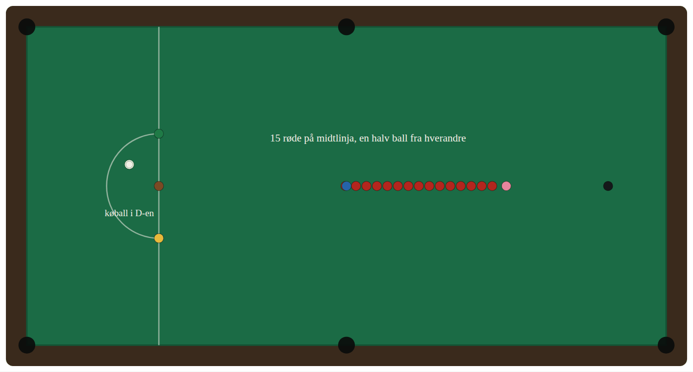
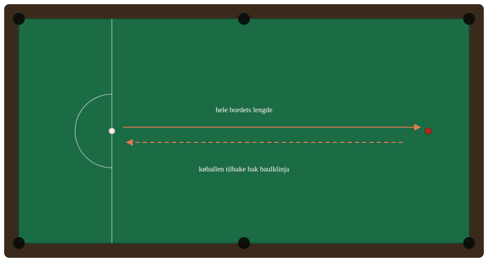
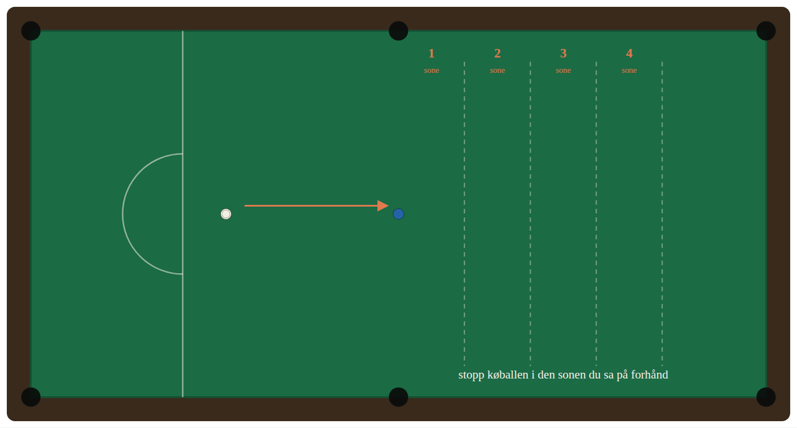
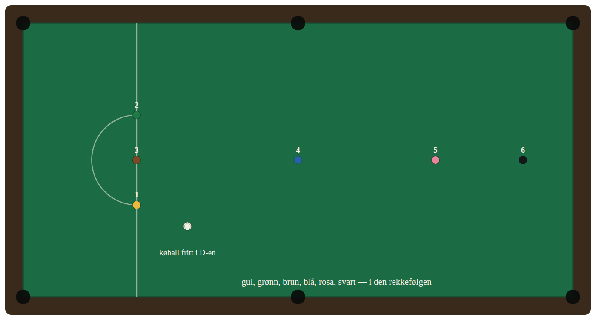
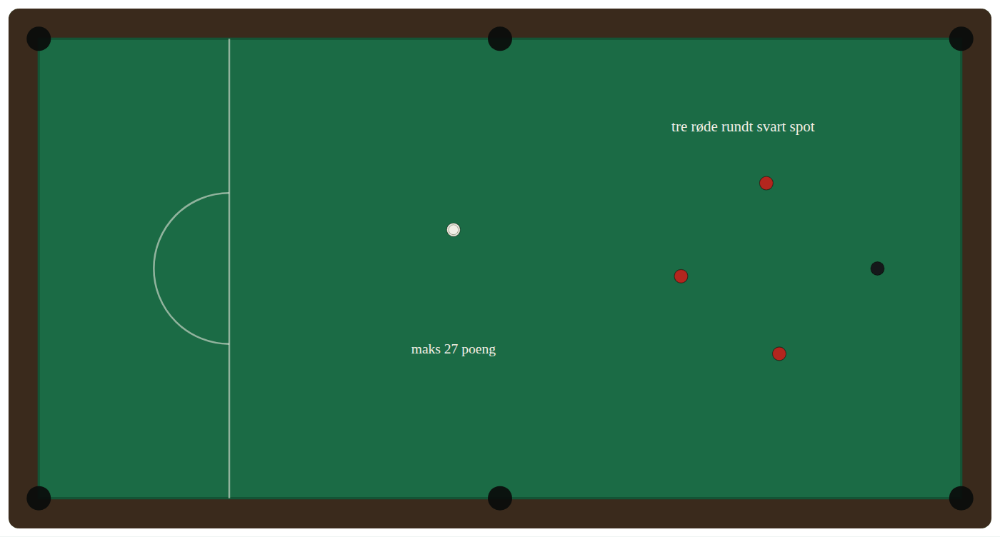
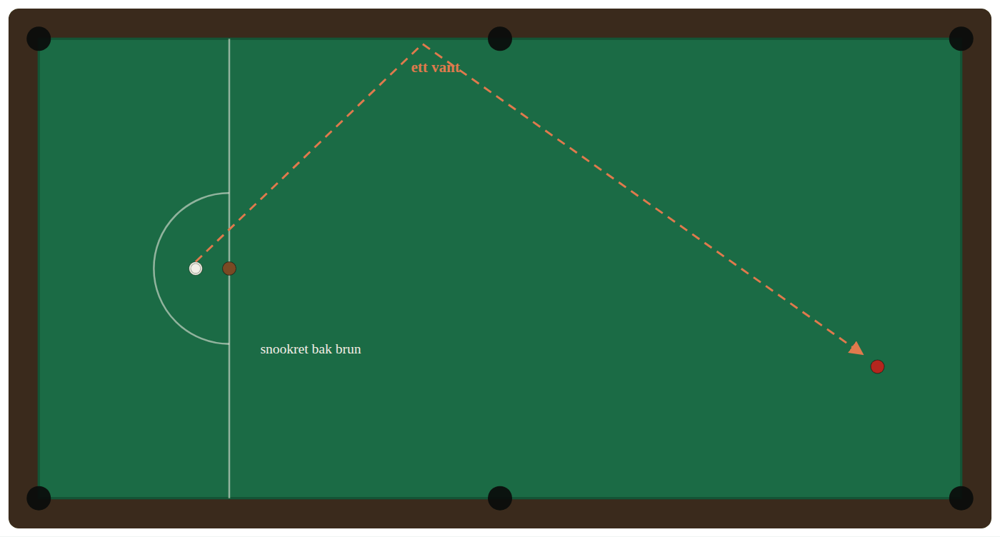

Åtte øvelser som hver gir et tall. Tallet noteres, og neste gang måles mot forrige gang — det er hele grepet. For spilleren som har stoppet opp rundt tjue i break.
Last ned som Word-dokumentVersjon 1.0 — september 2026 Åttende del av verktøykassen.
Øvelsene her er ikke nye, og de er ikke våre. De er snookerens felleseie — de har vært brukt i klubblokaler i over hundre år, og hver eneste av dem undervises i dag av trenere over hele verden. Vi har ikke funnet dem opp. Vi har skrevet dem ned på norsk, satt tall på dem, og lagt dem i en rekkefølge.
Det som er vårt, er målingen og trappa. Poengsummene, nivåene og loggskjemaet er satt av oss og er ikke prøvd i en klubb ennå. Tallene er anslag basert på hva øvelsene tåler, ikke på innsamlede resultater. Første klubb som kjører dette en sesong, bør sende inn tallene sine, så rettes trappa for alle.
Snookerskolen tar en person fra null til å kunne spille en frame. Dette dokumentet tar over der.
Det er skrevet for spilleren som har vært i klubben en stund, kan reglene, får noen baller, og har stoppet opp. Break-ene ligger rundt ti og tjue. Noen kvelder går det bedre enn andre, uten at det er tydelig hvorfor. Det er nøyaktig der de fleste slutter å komme.
Grunnen er verdt å si rett ut: uten måling føles ikke framgang som framgang. Spilleren som potter tolv røde på rad i dag og elleve i går, vet ingenting hvis ingen teller. Den som noterer 12 og 11, har en kurve.
Hele dokumentet bygger på ett grep: hver øvelse gir et tall. Tallet noteres, og neste gang måles mot forrige gang. Det er ikke motiverende fordi tallet er høyt. Det er motiverende fordi det beveger seg.
Fire regler. De gjelder alle øvelsene under.
| Én økt | 45–75 minutter. Kortere gir for lite gjentakelse, lengre gir slapp teknikk |
|---|---|
| Antall øvelser | To eller tre per økt. Ikke ni |
| Alltid | Noter tallet før du rigger om. Et tall du husker, er et tall du pynter på |
| Aldri | Ikke bytt øvelse fordi den går dårlig. Det er da den virker |
Varm opp i ti minutter før første måling. Et kaldt resultat er ikke et resultat, det er en oppvarming du skrev ned.
Spill en frame til slutt. Trening som aldri møter en motstander, blir en egen ferdighet som ikke overføres.
Den eldste og fortsatt den beste enkeltøvelsen som finnes. Den måler alt på én gang: potting, køballkontroll og evnen til å holde hodet kaldt når rekka blir kort.

Oppsett. Alle femten røde på langs midt på bordet, med omtrent en halv balls mellomrom, fra rosa spot og nedover mot blå. De seks fargene på sine egne spot. Køballen fritt i D-en.
De femten røde får ikke plass mellom rosa og svart — femten baller er 79 cm, og der er det 57. Derfor legges rekka nedover. Klubber gjør dette litt forskjellig; det viktige er at du gjør det likt hver gang, ellers måler du ikke det samme.
Slik gjør du. Spill som en vanlig frame: rød, farge, rød, farge. Fargene settes tilbake på spot hver gang. Fortsett til du bommer. Én gjennomkjøring, ett tall.
Måling. Poengsummen når du bommer. Maks er 147 som i en frame, men det er ikke poenget — du måler mot deg selv i forrige uke.
Nivåtrapp.
| Nivå | Poeng | Hva det betyr |
|---|---|---|
| 1 | under 20 | Du mister køballen tidlig. Jobb med øvelse 3 først |
| 2 | 20–39 | Du treffer, men velger farge etter hva som er lett nå |
| 3 | 40–59 | Du planlegger to baller fram |
| 4 | 60–89 | Du planlegger rekka |
| 5 | 90+ | Klubbens sterkeste sjikt |
Vanligste feil. Å ta den nærmeste fargen hver gang. Rekka løser seg ikke av seg selv — svart tre ganger på rad er lettere enn gul, grønn, brun i tilfeldig rekkefølge, fordi du slipper å krysse bordet.
Den ene ferdigheten som skiller klubbspilleren fra den som vinner kamper. Nesten alle framer inneholder minst én lang rød som må inn.

Oppsett. Én rød på svart spot. Køballen i D-en.
Slik gjør du. Pott den røde i et av de to øvre hjørnehullene, og få køballen tilbake bak baulklinja. Ti forsøk. Sett den røde tilbake hver gang.
Måling. Ett poeng for potten. Ett ekstra hvis køballen endte bak baulklinja. Maks 20 av 10 forsøk.
Nivåtrapp.
| Nivå | Poeng av 20 | |
|---|---|---|
| 1 | under 6 | Sikt før kontroll — dropp returkravet i noen uker |
| 2 | 6–9 | |
| 3 | 10–13 | |
| 4 | 14–17 | |
| 5 | 18–20 |
Vanligste feil. Å slå hardt for å få køballen tilbake. Kraften ødelegger siktet. En rolig støt med litt bakskru går lenger enn du tror.
Dette er øvelsen som løser de fleste problemer lenger nede i lista. Den som ikke vet hvor køballen stopper, kan ikke planlegge.

Oppsett. Blå på sin spot. Køballen rett foran, en halv bordlengde unna. Tenk deg fire soner bak blå spot, hver omtrent en køballengde dyp.
Slik gjør du. Si sonen høyt før du slår. Pott blå, og stopp køballen i den sonen du sa. Blå settes tilbake. Tolv forsøk, tre i hver sone, i tilfeldig rekkefølge.
Måling. Ett poeng for potten, ett for riktig sone. Maks 24.
Nivåtrapp.
| Nivå | Poeng av 24 | |
|---|---|---|
| 1 | under 8 | |
| 2 | 8–12 | |
| 3 | 13–17 | |
| 4 | 18–21 | |
| 5 | 22–24 |
Vanligste feil. Å sikte på sonen i stedet for på ballen. Potten kommer først; køballen styres med hvor på den du treffer og hvor hardt, ikke med å sikte annerledes.
Merk at kravet om å si sonen høyt er hele øvelsen. Uten den blir dette bare potting av blå, og da måler du ingenting.
Kort, målbar, og den delen av spillet der flest kaster bort poeng. En frame avgjøres ofte på de siste 27.

Oppsett. De seks fargene på sine spot. Køballen fritt i D-en.
Slik gjør du. Gul, grønn, brun, blå, rosa, svart — i den rekkefølgen. De blir liggende når de er potta, som på slutten av en frame. Bommer du, er runden slutt.
Måling. Poengsummen. Maks 27. Kjør tre runder og noter beste.
Nivåtrapp.
| Nivå | Beste av tre | |
|---|---|---|
| 1 | under 9 | Du kommer deg ikke fra grønn til brun |
| 2 | 9–14 | |
| 3 | 15–20 | |
| 4 | 21–26 | |
| 5 | 27 | Full runde |
Vanligste feil. Gul spilles slurvete fordi den er lett. Køballens plassering etter gul avgjør hele resten av runden.
Breakbygging begynner ikke med femten baller. Den begynner med tre, og med at du faktisk klarer å velge riktig.

Oppsett. Tre røde spredt rundt svart spot, ikke i klase. Svart på sin spot. Køballen fritt.
Slik gjør du. Rød, svart, rød, svart, rød, svart. Svart settes tilbake hver gang. Maks 27 poeng.
Nivåtrapp. Når du klarer 27 tre ganger på rad, legg til en rød. Fem røde med svart er 45. Da er du i praksis i gang med en breakbygging som holder i kamp.
Vanligste feil. Å legge køballen rett over svart. Den lille vinkelen er poenget — uten den kommer du ikke videre til neste rød.
Den eneste øvelsen her som handler om det du gjør når du ikke får spille det du vil. I kamp er det en tredjedel av tiden.

Oppsett. Køballen snookret bak brun. Én rød oppe ved toppvanten.
Slik gjør du. Kom ut av snookeren og treff den røde, via ett vant. Ti forsøk, med den røde flyttet litt hver gang.
Måling. To poeng for treff, ett for at du traff vantet der du siktet men bommet på ballen, null for ingenting. Maks 20.
Nivåtrapp.
| Nivå | Poeng av 20 | |
|---|---|---|
| 1 | under 5 | |
| 2 | 5–9 | |
| 3 | 10–13 | |
| 4 | 14–17 | |
| 5 | 18–20 |
Vanligste feil. Å gjette. Vinkelen ut av et vant er like stor som vinkelen inn — sikt på et punkt på vantet, ikke på ballen du skal treffe.
Ingen figur, fordi det er én ball og ett mål.
Oppsett. Vanlig oppstilling. Køballen i D-en, nær grønn side.
Slik gjør du. Slå av. Køballen skal treffe den ytterste røde tynt, gå ned i baulkområdet og bli liggende bak brun eller grønn. Ingen rød skal bli liggende potbar. Ti forsøk.
Måling. Ett poeng når køballen ender i baulk. Ett ekstra når ingen rød står åpen. Trekk fra to hvis du gir bort en potbar rød midt på bordet. Maks 20.
Hvorfor dette står her. Dette er det eneste støtet i frame som er helt likt hver eneste gang. Det er dermed det billigste å bli god på, og de fleste klubbspillere har aldri trent det en eneste gang.
Den kjedeligste øvelsen i dokumentet, og den som flytter mest.
Oppsett. Svart på sin spot. Køballen rett bak, slik at potten er helt rett.
Slik gjør du. Pott svart og få køballen tilbake til samme sted, slik at neste støt er identisk. Fortsett til du bommer eller mister plasseringen.
Måling. Antall på rad.
Nivåtrapp. 3 er greit. 10 er bra. 25 begynner å bli klubbens beste. Verdens beste gjør hundrevis.
Vanligste feil. Å tro at den er for lett til å trenes. En helt rett pott avslører hver eneste skjevhet i køføringen, og det er derfor den er ubehagelig.
Uten logg er dette bare åtte måter å slå baller på.
Ett ark per spiller, i en perm i klubblokalet. Papir slår app her, fordi permen ligger fremme og minner folk på seg selv.
| Dato | Øvelse | Resultat | Nivå | Merknad |
|---|
Noter alltid resultatet, også det dårlige. En logg med bare gode kvelder er verdiløs, fordi den ikke kan vise framgang.
Regn ut nivåsummen din hver måned: nivået på alle åtte øvelsene lagt sammen, fra 8 til 40. Det ene tallet er det du følger over en sesong.
Dette er delen som angår styret, ikke spilleren.
Et opplegg som dette koster klubben ingenting og krever ingen trener. Det krever en perm, en fast kveld og noen som gidder å spørre «hva fikk du?».
Tre ting følger av det, i den rekkefølgen de faktisk skjer:
1. Folk kommer oftere. En spiller som har et tall å slå, har en grunn til å komme på tirsdag. En som bare skal «spille litt», har det ikke.
2. Klubben får en intern stige. Nivåsummen gir en rangering som ikke krever turnering, og som en fersk spiller kan klatre i uten å møte klubbens beste og tape 0–4. Det henger sammen med klubbrating-handicap, som løser det samme problemet på kampsiden.
3. Flere melder seg på turneringer. Dette er den mest interessante påstanden i hele dokumentet, og den skal merkes som det den er: vi vet ikke om den stemmer.
Argumentet er at terskelen for å melde seg på en regional turnering er å tro at man ikke blir helt til latter, og at et tall man kjenner senker den terskelen. Det er rimelig. Det er ikke målt.
Det som gjør at vi kan måle det: nullpunktet fra CueScore ligger allerede. 144 snookerturneringer, seks sesonger, 192 spillere og 1 825 påmeldinger er hentet ut og ført i FAKTA punkt 7. En klubb som starter med loggen høsten 2026, kan sammenlignes mot sine egne tall fra 2020–2026. Det er første gang vi har mulighet til å etterprøve en påstand om rekruttering med noe annet enn magefølelse — og da skal vi gjøre det, også hvis svaret blir nei.
Øvelsene over er beskrevet, ikke vist. Det er en reell svakhet ved et papirark: en pott er lettere å forstå når man ser den.
Stephen Hendry har en gratis YouTube-kanal med en egen kursspilleliste. Han vant verdensmesterskapet sju ganger — 1990, 1992 til 1996, og 1999 — og er fortsatt den mest vinnende spilleren i moderne snooker. Kanalen er hans egen, og den er gratis for alle.
Vi har ingen avtale med ham, og han har ikke sett dette dokumentet. Lenkene under er anbefalinger på linje med å anbefale en bok. Øvelsene i kompendiet er skrevet av oss, fra sportens felles repertoar, ikke hentet fra videoene hans.
| Vår øvelse | Se også |
|---|---|
| 1 · Opplinjingen | Headcam POV of clearing a line-up |
| 2 · Langpotten | Master your potting angles |
| 3 · Kontrollstigen | Number 1 routine to improve cue ball control |
| 4 · Fargerunden | Don't make these mistakes when clearing the colours |
| 5 · Tre røde | Make bigger breaks by doing this · 6 steps to your first 100+ break |
| 6 · Utslaget | The easy way to escape challenging snookers |
| 7 · Åpningsstøtet | Do this every time to master the break-off |
| 8 · Rett svart | 3 biggest cue mistakes |
| Generelt | 4 practice routines · How to aim with side |
Hele spillelista: Cue Tips
Øvelsene er snookerens felles repertoar og tilhører ingen. Beskrivelsene, poengsystemet, nivåtrappene og figurene er skrevet og tegnet for dette dokumentet.
Bordmålene i figurene er NBFs kravspesifikasjon for biljardbord og anlegg, juni 2013: spilleflate 3 569 × 1 778 mm, baulklinje 737 mm fra baulkvanten, D-radius 292 mm, svart spot 324 mm fra toppvanten, ball 52,5 mm. Se Plassbehov-og-lys.
YouTube-lenkene går til Stephen Hendrys egen kanal. Intet innhold derfra er gjengitt, oversatt eller omskrevet. Kanalen er lenket, ikke brukt.
Deltakertallene i «Hva klubben får ut av det» er hentet fra CueScore og ført i FAKTA punkt 7. Se Nullpunkt-2020-2026.
Innholdet er kontrollert 2026-09-13. Frister og beløp endres — kontroller alltid mot ordningens egen utlysning før dere sender noe. Finner du en feil, si fra, så rettes den for alle klubbene.